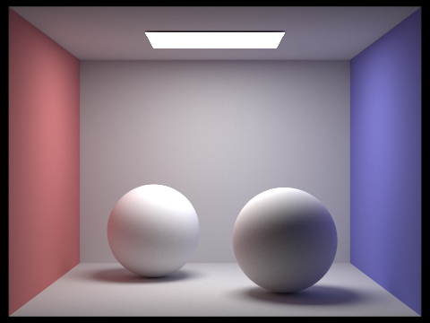
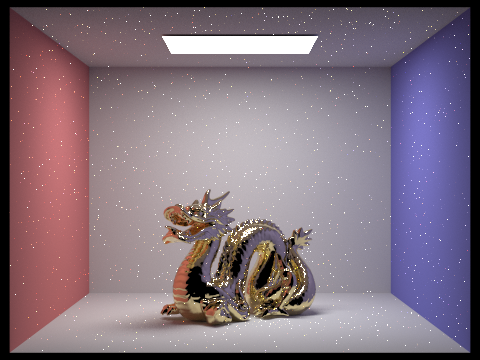
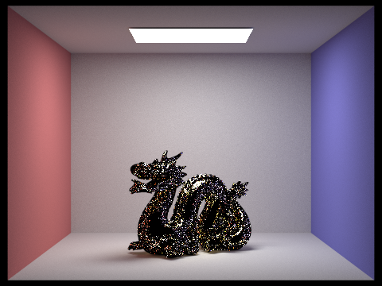
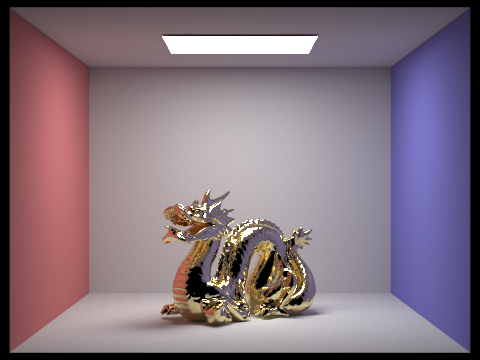

CS 184: Computer Graphics and Imaging, Spring 2017
Bidirectional Path Tracing & Multiple Importance Sampling With Photon Mapping
Xiangzheng Mao, CS184-afn; Ian Marshall, CS184-aby
|
Diffuse Spheres, 1024 Samples Per Pixel, Path Tracing
|
|
Diffuse Spheres, 1024 Samples Per Pixel, Light Tracing
|
|

Diffuse Spheres, 1024 Samples Per Pixel, Bidirectional Path Tracing
|
|

Microfacet Dragon With Alpha = 0.005, 1024 Samples Per Pixel, Path Tracing
|
|

Microfacet Dragon With Alpha = 0.005, 1024 Samples Per Pixel, Light Tracing
|
|

Microfacet Dragon With Alpha = 0.005, 1024 Samples Per Pixel, Bidirectional Path Tracing
|
Current Progress
Implementation of bidirectional path tracing is completed. For a scene with diffuse materials only, it is visually convincing that path tracing, light tracing, and bidirectional path tracing all converge to the same image within reasonable amount of samples per pixel.
To demonstrate the differences among the three algorithms, please take a look at the microfacet dragon with alpha = 0.005. This scene was known to be difficult to render with the normal path tracr we implemented in project 3. The path tracing algorithm allows two types of sampling techniques to contribute to the image: either the eye path directly hitting a scene light (type 0 technique) or randomly choosing a point on a scene light and connecting the eye path to it (type 1 technique). We didn't have to worry about weighting the contributions of different types of techniques because when the last vertex of eye path lands on a specular material, we only count contribution of type 0 technique, and if otherwise, only contribution of type 1 technique is counted. When the last vertex of eye path lands on a microfacet material, since it is not specular, we will only count type 1 technique. However, due to the near specular nature of low alpha microfacet materials, sampling the last vertex by the importance sampling of the scene light rather than the importance sampling of the material makes the rate of convergence extremely low. This is why it was difficult to render with normal path tracing. Note that this scene is hard to render with light tracing alone as well, since light tracing only allows type k-1 technique (where k is the number of vertexes on a path) and when the last vertex of light path lands on the dragon, the same problem as in path tracing will make the rate of convergence extremely low. With bidirectional path tracing however, since there are no specular materials in the scene, a path with k vertexes can be sampled by k different techniques (excluding directly hitting the eye), and their contributions are weighted proportional to the square of their individual pdf using balance heuristic (this is what multiple importance sampling does), so that techniques that perform better on a given path will be more important to the final image, which makes bidirectional path tracing much more robust than path tracing or light tracing alone.
Progress Slides.
Work Plan
Although bidirectional path tracing is much better than path tracing or light tracing alone, it has a notable weakness. Let a scene only contains diffuse or specular materials, when a path consists of only one diffuse vertex whose two neighboring vertexes are both specular (both are neither eye nor light), because type 0 technique converges slowly, since only type 0 technique (directly hitting the light) will contribute. In a scene with many specular objects, paths like this (known as SDS paths) will introduce significant noise on the image. One way to denoise is to abandon SDS paths; however, reflected caustics will be missing from the final image. To handle SDS paths without making the algorithm too complicated, the plan is to implement photon mapping specifically for SDS paths.
To combine bidirectional path tracing and photon mapping while avoiding using multiple importance sampling across the two algorithms, photon mapping will be used on a path if and only if the first non-eye non-light vertexes from both eye path and light path are specular and there exists at least one non-specular non-eye non-light vertex on the path. And bidirectional path tracing will be used on a path if and only if it does not satisfy the above conditions. Combining bidirectional path tracing and photon mapping in this way will make the algorithm much more robost for scenes with diffuse or specular materials only.